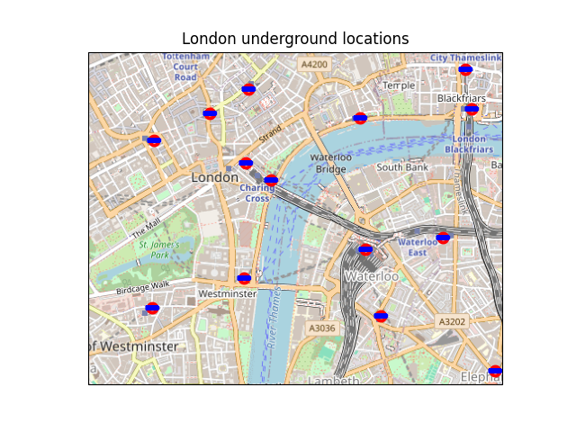

Note
Go to the end to download the full example code.
Tube Stations#
Produces a map showing London Underground station locations with high resolution background imagery provided by OpenStreetMap.
from matplotlib.path import Path
import matplotlib.pyplot as plt
import numpy as np
import cartopy.crs as ccrs
from cartopy.io.img_tiles import OSM
def tube_locations():
"""
Return an (n, 2) array of selected London Tube locations in Ordnance
Survey GB coordinates.
Source: https://www.doogal.co.uk/london_stations.php
"""
return np.array([[531738., 180890.], [532379., 179734.],
[531096., 181642.], [530234., 180492.],
[531688., 181150.], [530242., 180982.],
[531940., 179144.], [530406., 180380.],
[529012., 180283.], [530553., 181488.],
[531165., 179489.], [529987., 180812.],
[532347., 180962.], [529102., 181227.],
[529612., 180625.], [531566., 180025.],
[529629., 179503.], [532105., 181261.],
[530995., 180810.], [529774., 181354.],
[528941., 179131.], [531050., 179933.],
[530240., 179718.]])
def main():
imagery = OSM()
fig = plt.figure()
ax = fig.add_subplot(1, 1, 1, projection=imagery.crs)
ax.set_extent([-0.14, -0.1, 51.495, 51.515], ccrs.PlateCarree())
# Construct concentric circles and a rectangle,
# suitable for a London Underground logo.
theta = np.linspace(0, 2 * np.pi, 100)
circle_verts = np.vstack([np.sin(theta), np.cos(theta)]).T
concentric_circle = Path.make_compound_path(Path(circle_verts[::-1]),
Path(circle_verts * 0.6))
rectangle = Path([[-1.1, -0.2], [1, -0.2], [1, 0.3], [-1.1, 0.3]])
# Add the imagery to the map.
ax.add_image(imagery, 14)
# Plot the locations twice, first with the red concentric circles,
# then with the blue rectangle.
xs, ys = tube_locations().T
ax.plot(xs, ys, transform=ccrs.OSGB(approx=False),
marker=concentric_circle, color='red', markersize=9, linestyle='')
ax.plot(xs, ys, transform=ccrs.OSGB(approx=False),
marker=rectangle, color='blue', markersize=11, linestyle='')
ax.set_title('London underground locations')
plt.show()
if __name__ == '__main__':
main()
Total running time of the script: (0 minutes 0.338 seconds)